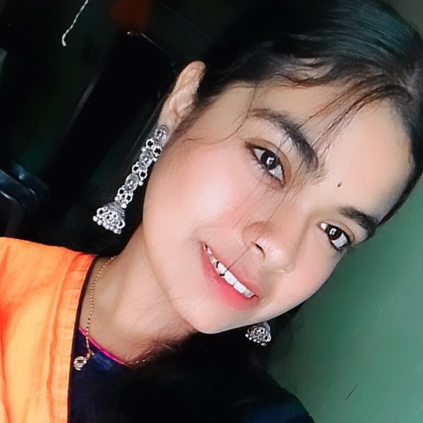

“Eternal Embrace: A Love Story Beyond Time”
I was one of special members of this story. Our first conversation took place at a Bengali coaching class on January 10, 2023. It was our first encounter, although we didn’t recognize each other at first. Throughout the Bengali coaching, we hardly spoke, but as days passed, a bond started to form between us. Then came the day, June 13, 9:29 pm, when she messaged me for the first time. Seeing her message filled me with such joy that it was indescribable. From then on, we gradually started talking more and more at the coaching class.
Her name was Aishika (Ghuchu baby), as per her request not to disclose her name. Our friendship deepened day by day, and we started sharing our thoughts and feelings with each other. We would discuss our days, share our mistakes, or if one of us was feeling down. She used to call me her mood maker, and gradually, we became best friends. Our friendship became so strong that people at school or the coaching class often mistook us for a couple, which we found amusing.
As 2023 came to an end, I couldn’t help but feel grateful for having her in my life. However, I hesitated to express my feelings, fearing it might ruin our friendship. So, I kept quiet, but little did I know that 2024 would bring unexpected changes.